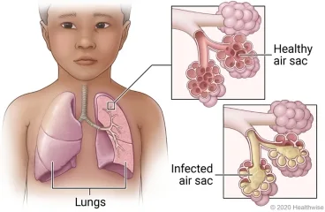
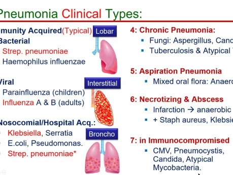
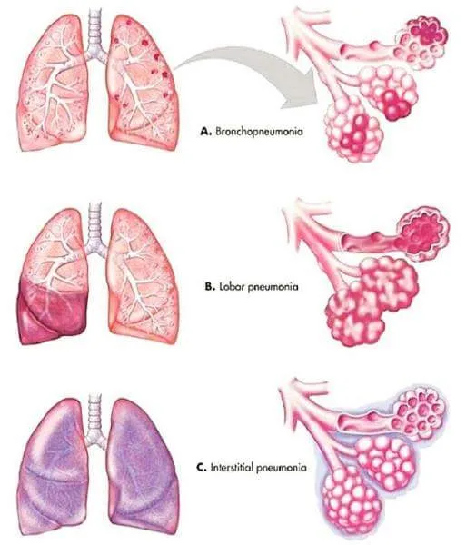
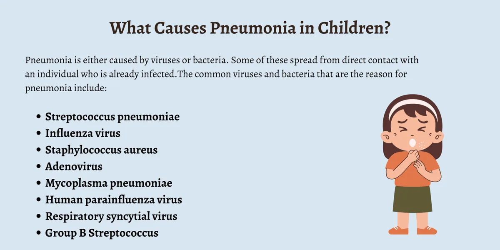
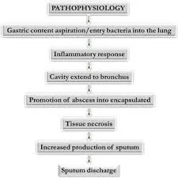
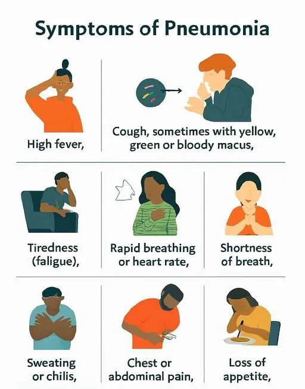
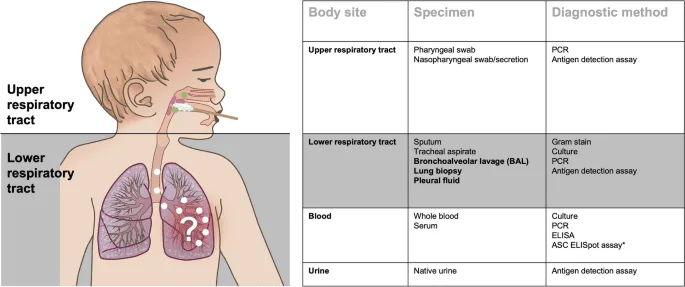
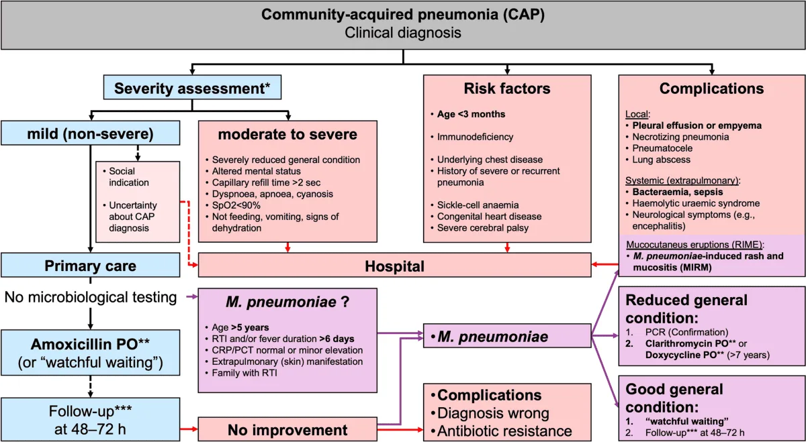

Expanded Nursing Uganda Explanation
Pneumonia should be understood beyond a short definition. Link the concept to patient history, focused assessment, common risks, nursing priorities, documentation and evaluation of outcomes.
01 Nursing Uganda Snapshot
Pneumonia is infection and inflammation of lung tissue. Nursing care focuses on oxygenation, fever control, hydration, medicine adherence, airway clearance and early detection of respiratory distress.
02 Build The Idea
Pneumonia becomes dangerous when ventilation, perfusion and oxygenation are affected. The nurse watches work of breathing as carefully as temperature.
- Common features: cough, fever, chest pain, sputum and fatigue.
- Children: may show fast breathing, poor feeding or lethargy.
- Older adults: may present with confusion or weakness.
- Complications: respiratory failure, sepsis, pleural effusion and dehydration.
03 Ward Mode
At triage, respiratory distress should be seen before paperwork becomes the priority.
- Count respiratory rate for a full minute.
- Check oxygen saturation if available.
- Observe chest indrawing, nasal flaring, cyanosis and ability to speak/feed.
- Give oxygen, fluids, antipyretics and antibiotics as prescribed.
04 Red Flags
- Cyanosis.
- Oxygen saturation below target.
- Chest indrawing.
- Confusion.
- Inability to drink or breastfeed.
- Convulsions.
- Signs of sepsis.
05 Patient Teaching
- Complete antibiotics if prescribed.
- Return for difficult breathing, blue lips, inability to drink, persistent fever or worsening weakness.
- Encourage immunization, nutrition, hand hygiene and reduced smoke exposure.
06 Exam Answer Map
- Define pneumonia.
- State causes and risk factors.
- List clinical features.
- Explain assessment of respiratory distress.
- Describe management and prevention.
07 Overview
Pneumonia remains a leading cause of morbidity and mortality in children worldwide, especially in developing countries. Its epidemiology and etiology differ significantly from adults, largely due to variations in immune system maturity, exposure patterns, and anatomical differences.
Pneumonia is an acute inflammatory condition of the lung parenchyma caused by an infection.
- lung parenchyma is the the functional tissue of the lungs, specifically the alveoli and bronchioles.
This inflammation leads to the filling of the alveolar spaces with exudate, cells, and fluid, a process known as consolidation. This consolidation impairs gas exchange, leading to symptoms such as cough, fever, chills, and difficulty breathing.
In simpler terms, pneumonia is an infection that inflames the air sacs in one or both lungs. The air sacs may fill with fluid or pus (purulent material), causing cough with phlegm or pus, fever, chills, and trouble breathing.
Pneumonia can be classified in various ways, each providing a different lens through which to understand its cause, presentation, and management.
This classification focuses on the specific microorganism responsible for the infection.
- Bacterial Pneumonia: The most common type, often more severe than viral pneumonia. Common Pathogens: Streptococcus pneumoniae (Pneumococcus): The most frequent cause of community-acquired bacterial pneumonia.
- Haemophilus influenzae.
- Staphylococcus aureus (including MRSA).
- Klebsiella pneumoniae.
- Mycoplasma pneumoniae (often called "walking pneumonia" due to milder symptoms).
- Chlamydophila pneumoniae.
- Legionella pneumophila (Legionnaires' disease).
- Viral Pneumonia: Often milder than bacterial pneumonia but can be severe, especially in infants, elderly, and immunocompromised individuals. Common Pathogens: Influenza viruses (Types A and B).
- Respiratory Syncytial Virus (RSV).
- Adenoviruses.
- Parainfluenza viruses.
- Human Metapneumovirus.
- Coronaviruses (e.g., SARS-CoV, MERS-CoV, SARS-CoV-2).
- Fungal Pneumonia: Less common, usually affecting individuals with weakened immune systems or those exposed to large amounts of fungi in the environment. Common Pathogens: Pneumocystis jirovecii (PCP pneumonia, common in HIV/AIDS patients).
- Histoplasma capsulatum (Histoplasmosis).
- Coccidioides immitis (Coccidioidomycosis or Valley Fever).
- Blastomyces dermatitidis (Blastomycosis).
- Aspergillus species.
- Parasitic Pneumonia: Rare, caused by parasites, usually seen in immunocompromised individuals or those who have traveled to endemic areas. Common Pathogens: Toxoplasma gondii.
- Strongyloides stercoralis.
- Aspiration Pneumonia: Occurs when foreign material (e.g., food, liquid, vomit, stomach contents) is inhaled into the lungs, leading to inflammation and often secondary bacterial infection. Causes: Impaired swallowing mechanisms, altered consciousness, gastroesophageal reflux.
- Chemical Pneumonia (Pneumonitis): Lung inflammation caused by inhaling irritating chemicals or toxic gases, rather than an infectious agent. This is not an infection but can predispose to one. Causes: Inhalation of smoke, noxious fumes, or gastric acid.
This classification describes the pattern of lung involvement as seen on chest imaging.
- Lobar Pneumonia: Affects a large, continuous area of an entire lobe of a lung. Often caused by Streptococcus pneumoniae . Appearance: Typically seen as a dense, homogeneous consolidation on chest X-ray.
- Bronchopneumonia (or Lobular Pneumonia): Characterized by patchy consolidation centered around the bronchi and bronchioles, often affecting multiple lobes. More common in infants, young children, and the elderly. Appearance: Patchy infiltrates on chest X-ray, often bilateral and basal.
- Interstitial Pneumonia: Involves the interstitial spaces of the lung (the tissue between the alveoli and capillaries), rather than primarily the air sacs. More commonly associated with viral or atypical bacterial infections. Appearance: Reticular or reticulonodular patterns on chest X-ray.
- Miliary Pneumonia: A form of pneumonia characterized by the wide dissemination of an infectious agent ( Mycobacterium tuberculosis ) throughout the lung tissue in small, discrete lesions resembling millet seeds. Appearance: Fine, diffuse nodular infiltrates throughout both lungs on chest X-ray.
This classification refers to the time course of the illness.
- Acute Pneumonia: Rapid onset and progression of symptoms, typically resolving within days to a few weeks with appropriate treatment. Most common form.
- Chronic Pneumonia: Persistent symptoms and radiological findings lasting for weeks to months, or even longer. Often associated with specific pathogens (e.g., Mycobacterium tuberculosis , fungi) or underlying conditions.
This is one of the most clinically relevant classifications, as it guides initial empiric treatment decisions.
- Community-Acquired Pneumonia (CAP): Pneumonia acquired outside of hospitals or long-term care facilities. Common Pathogens: Streptococcus pneumoniae, Mycoplasma pneumoniae, Chlamydophila pneumoniae, Haemophilus influenzae, influenza virus.
- Hospital-Acquired Pneumonia (HAP) / Nosocomial Pneumonia: Pneumonia that develops 48 hours or more after hospital admission and was not incubating at the time of admission. Common Pathogens: Often more virulent and antibiotic-resistant bacteria, such as Pseudomonas aeruginosa, Staphylococcus aureus (MRSA), Klebsiella species, Escherichia coli .
- Ventilator-Associated Pneumonia (VAP): A subtype of HAP that develops in patients who have been mechanically ventilated for more than 48 hours. Common Pathogens: Similar to HAP, often highly resistant organisms.
The etiology refers to the specific agents or organisms responsible for causing pneumonia. As discussed in Objective 1, these can be broadly categorized.
These are the most frequent causes of pneumonia, especially bacterial pneumonia.
- Streptococcus pneumoniae (Pneumococcus): Description: The leading cause of community-acquired bacterial pneumonia (CAP) in all age groups, particularly in adults.
- Characteristics: Gram-positive coccus, typically arranged in pairs (diplococci). Has a polysaccharide capsule that protects it from phagocytosis.
- Risk Factors: Old age, chronic lung disease, recent viral infection, immunocompromised status.
- Haemophilus influenzae : Description: A common cause of both CAP and HAP, especially in individuals with chronic obstructive pulmonary disease (COPD) or other underlying lung conditions.
- Characteristics: Gram-negative coccobacillus.
- Risk Factors: COPD, cystic fibrosis, alcoholism.
- Staphylococcus aureus : Description: Can cause severe pneumonia, often seen as HAP or as a complication of viral infections (e.g., influenza). Methicillin-resistant S. aureus (MRSA) is a significant concern, especially in VAP and HCAP.
- Characteristics: Gram-positive coccus, often arranged in clusters. Produces various toxins.
- Risk Factors: Recent influenza, injection drug use, skin/soft tissue infection, hospitalization, surgical procedures.
- Klebsiella pneumoniae : Description: A common cause of HAP and, less frequently, severe CAP, particularly in individuals with alcoholism or diabetes. Known for causing "currant jelly" sputum.
- Characteristics: Gram-negative rod, often encapsulated.
- Risk Factors: Alcoholism, diabetes, chronic lung disease, hospitalization.
- Pseudomonas aeruginosa : Description: A significant cause of HAP and VAP, particularly in immunocompromised patients, those with cystic fibrosis, or prolonged hospital stays. Difficult to treat due to antibiotic resistance.
- Characteristics: Gram-negative rod.
- Risk Factors: Cystic fibrosis, bronchiectasis, mechanical ventilation, broad-spectrum antibiotic use, immunocompromised state.
- Mycoplasma pneumoniae : Description: A common cause of "atypical pneumonia" or "walking pneumonia" in young adults and school-aged children. Causes milder, but prolonged, symptoms.
- Characteristics: Lacks a cell wall, making it resistant to many common antibiotics (e.g., penicillin).
- Chlamydophila pneumoniae : Description: Another cause of atypical pneumonia, often with milder symptoms.
- Characteristics: Obligate intracellular bacterium.
- Legionella pneumophila : Description: Causes Legionnaires' disease, a severe form of pneumonia often associated with contaminated water sources (e.g., air conditioning systems, hot tubs).
- Characteristics: Gram-negative rod, fastidious growth requirements.
Viruses are a very common cause of pneumonia, especially in children. They can also predispose to secondary bacterial infections.
- Influenza Viruses (A and B): Seasonal epidemics cause widespread respiratory illness, including primary viral pneumonia and often secondary bacterial pneumonia.
- Respiratory Syncytial Virus (RSV): The most common cause of lower respiratory tract infections in infants and young children, often leading to bronchiolitis and pneumonia.
- Adenoviruses: Can cause a range of respiratory illnesses, including pneumonia, particularly in children and immunocompromised individuals.
- Parainfluenza Viruses: Common cause of croup, but can also cause bronchiolitis and pneumonia, especially in children.
- Coronaviruses (e.g., SARS-CoV-2): Various coronaviruses can cause respiratory infections, with SARS-CoV-2 (COVID-19) being a notable cause of severe viral pneumonia and acute respiratory distress syndrome (ARDS).
More prevalent in immunocompromised individuals or specific geographic regions.
- Pneumocystis jirovecii : Causes Pneumocystis pneumonia (PCP), a common and severe opportunistic infection in individuals with HIV/AIDS.
- Endemic Fungi (e.g., Histoplasma capsulatum, Coccidioides immitis, Blastomyces dermatitidis ): Found in specific geographic areas. Exposure to spores can lead to pneumonia, especially in immunocompromised individuals.
- Aspergillus species: Can cause invasive aspergillosis, a severe pneumonia, primarily in severely immunocompromised patients (e.g., transplant recipients, leukemia patients).
Not an infectious agent itself, but the aspiration of acidic gastric contents or other foreign material can cause a severe chemical pneumonitis, which then often becomes secondarily infected by oral flora (anaerobic bacteria).
Pathogenesis describes the sequence of events that leads to the development of pneumonia, from initial exposure to clinical symptoms.
The respiratory tract has several protective mechanisms to prevent infection:
- Upper Airway Filtration: Nasal hairs, turbinates, and mucous membranes filter out large particles.
- Epiglottis and Cough Reflex: Protect the lower airways from aspiration.
- Mucociliary Escalator: Ciliated epithelial cells line the trachea and bronchi, moving mucus (which traps pathogens) upwards for expectoration or swallowing.
- Alveolar Macrophages: Phagocytic cells in the alveoli that engulf and destroy pathogens and debris.
- Humoral and Cellular Immunity: Antibodies (IgA, IgG) and T lymphocytes provide specific immunity.
Pneumonia develops when pathogens overcome or bypass these host defenses.
- Aspiration (Most Common): Microaspiration of oropharyngeal secretions containing pathogens is the most frequent route. This happens constantly in small amounts, but typically the host defenses clear them. Impaired consciousness, dysphagia, or presence of a nasogastric tube increases the risk of significant aspiration.
- Inhalation: Airborne pathogens (e.g., viruses, Mycoplasma, Legionella , fungi) can be inhaled directly into the lower respiratory tract.
- Hematogenous Spread: Pathogens from a distant site of infection (e.g., endocarditis, IV drug use, abdominal sepsis) can travel through the bloodstream to the lungs.
- Direct Spread: Less common, but can occur from contiguous infected sites (e.g., empyema spreading to lung, trauma).
Once pathogens reach the lower respiratory tract and evade local defenses, a series of events leads to inflammation and consolidation:
- Colonization and Multiplication: Pathogens colonize the alveoli and/or terminal bronchioles and begin to multiply.
- Immune Response and Inflammation: Alveolar Macrophages: Are typically the first line of defense. If overwhelmed, they release cytokines (e.g., TNF-alpha, IL-1, IL-6, IL-8).
- Neutrophil Recruitment: These cytokines attract neutrophils from the bloodstream into the alveolar spaces.
- Increased Vascular Permeability: The inflammatory response causes vasodilation and increased permeability of the alveolar-capillary membrane.
- Fluid Exudation and Consolidation: Plasma fluid, red blood cells, and fibrin leak into the alveolar spaces.
- Neutrophils and bacteria fill the alveoli.
- This mixture of fluid, cells, and debris leads to the characteristic consolidation seen in pneumonia, where the lung tissue becomes dense and airless.
- Impaired Gas Exchange: The consolidated alveoli can no longer participate in gas exchange.
- This leads to ventilation-perfusion mismatch (areas are perfused but not ventilated), resulting in hypoxemia (low blood oxygen).
- The increased work of breathing due to decreased lung compliance and airway obstruction can also lead to hypercapnia (high blood carbon dioxide) in severe cases.
- Tissue Damage: The inflammatory process and release of bacterial toxins can cause damage to the alveolar and bronchial epithelial cells, impairing mucociliary function and further propagating inflammation.
- Resolution: With effective immune response and/or antibiotic treatment, the inflammation subsides, macrophages clear cellular debris, and the exudate is reabsorbed, allowing the lung to return to normal function.
The pathogens responsible for pneumonia vary significantly by age group.
- Pneumonia in neonates is often acquired perinatally (from the mother during birth) or nosocomially (in the hospital).
- Bacterial: Group B Streptococcus (GBS): Common cause of early-onset neonatal sepsis and pneumonia.
- Gram-negative enteric bacilli: Escherichia coli, Klebsiella pneumoniae.
- Listeria monocytogenes.
- Viral: Less common primary cause, but can be involved (e.g., Herpes Simplex Virus - HSV).
- Transition period, with a mix of perinatal pathogens and increasing community-acquired pathogens.
- Bacterial: Streptococcus pneumoniae (pneumococcus): Increasingly common.
- Haemophilus influenzae (non-typeable or type b if unvaccinated).
- Staphylococcus aureus : Can cause severe disease.
- Atypical Bacteria: Chlamydia trachomatis : Can cause afebrile pneumonia, often associated with conjunctivitis, transmitted from mother during birth. Presents at 2-12 weeks of age.
- Bordetella pertussis (whooping cough): Can cause severe pneumonia, especially in unvaccinated infants.
- Viral (Most Common Overall): Respiratory Syncytial Virus (RSV): The leading cause of bronchiolitis and pneumonia in infants.
- Parainfluenza viruses: (Types 1, 2, 3).
- Adenovirus: Can cause severe and prolonged disease.
- Influenza viruses: (A and B).
- Human Metapneumovirus.
- Viral (Still Most Common): RSV, Influenza, Parainfluenza, Adenovirus, Human Metapneumovirus, Rhinovirus.
- Bacterial: Streptococcus pneumoniae (Pneumococcus): Remains the most frequent bacterial cause.
- Haemophilus influenzae (non-typeable).
- Staphylococcus aureus (including MRSA).
- Streptococcus pyogenes (Group A Strep): Less common but can cause severe pneumonia.
- Atypical Bacteria: Mycoplasma pneumoniae: Becomes more common in this age group, though classically associated with school-aged children.
- The spectrum of pathogens begins to resemble that of adults.
- Atypical Bacteria (Increasingly Common): Mycoplasma pneumoniae: The most common cause of "atypical pneumonia" or "walking pneumonia."
- Chlamydophila pneumoniae.
- Bacterial: Streptococcus pneumoniae.
- Staphylococcus aureus (including MRSA).
- Haemophilus influenzae.
- Streptococcus pyogenes.
- Viral: Influenza A and B.
- Adenovirus.
- Tuberculosis ( Mycobacterium tuberculosis ): Consider in endemic areas or with risk factors.
- Fungal Pneumonia: (e.g., Pneumocystis jirovecii pneumonia - PCP) primarily in immunocompromised children.
- Aspiration Pneumonia: In children with feeding difficulties, GERD, or neurological impairment.
Recognize age-specific manifestations and indicators of severity to ensure timely intervention.
- Cough: May be dry, moist, or productive (though young children rarely expectorate sputum). Can sometimes be the only prominent symptom.
- Tachypnea (Increased Respiratory Rate): Often the most sensitive and specific sign of pneumonia in children, especially in infants. Defined as: < 2 months: ≥ 60 breaths/min
- 2-11 months: ≥ 50 breaths/min
- 1-5 years: ≥ 40 breaths/min
- 5 years: ≥ 20 breaths/min
- Fever: Present in many cases, but can be absent, especially in neonates, young infants, or immunocompromised children.
- Dyspnea (Difficulty Breathing): Manifested as increased work of breathing.
- Lethargy / Irritability: Non-specific signs of illness in children.
- Poor Feeding / Decreased Oral Intake: Common in infants and young children.
- Chest Pain: More common in older children, often pleuritic (sharp, worse with breathing).
- Abdominal Pain: Can be referred pain from diaphragmatic irritation, especially in lower lobe pneumonia.
- Pneumonia in neonates is often subtle and non-specific, making diagnosis challenging.
- Non-specific Signs: Respiratory Distress: Tachypnea (often the earliest sign), grunting, nasal flaring, retractions (subcostal, intercostal, suprasternal).
- Apnea: Pauses in breathing, especially in premature infants.
- Cyanosis (bluish discoloration) or pallor.
- Lethargy, irritability, hypotonia.
- Poor feeding, vomiting.
- Temperature instability (hypothermia is common, fever less so).
- Jaundice.
- Physical Exam: May reveal decreased breath sounds, crackles (rales), or wheezing.
- More overt signs of respiratory illness are typically present.
- Key Signs: Tachypnea: Always a critical sign.
- Retractions: Subcostal, intercostal, suprasternal, supraclavicular.
- Nasal Flaring.
- Grunting: Short, low-pitched sounds during expiration, attempting to increase end-expiratory pressure.
- Cough: Can be prominent, may be paroxysmal, especially with Pertussis or viral causes like RSV.
- Fever.
- Poor feeding, decreased activity.
- Wheezing (more common with viral pneumonia/bronchiolitis).
- Physical Exam: Crackles, decreased breath sounds, dullness to percussion (if consolidation is significant).
- Similar to infants, but with more verbal communication of symptoms.
- Key Signs: Tachypnea.
- Cough: Often harsh and persistent.
- Fever.
- Dyspnea, increased work of breathing.
- Lethargy, irritability, decreased playfulness.
- Decreased appetite.
- Abdominal pain: Can be a presenting complaint, particularly with lower lobe pneumonia irritating the diaphragm.
- Physical Exam: Crackles, rhonchi, decreased breath sounds, dullness to percussion.
- Clinical presentation begins to resemble adult pneumonia.
- Key Signs: Cough: Can be productive with sputum, especially in bacterial pneumonia.
- Fever and Chills.
- Dyspnea / Shortness of Breath.
- Pleuritic Chest Pain: Sharp pain worsened by breathing or coughing.
- Headache, malaise, myalgia.
- Abdominal pain.
- "Atypical" Pneumonia (e.g., Mycoplasma pneumoniae): Often presents with more insidious onset, low-grade fever, persistent dry cough, headache, and malaise, sometimes called "walking pneumonia."
- Physical Exam: Crackles, egophony, decreased breath sounds, dullness to percussion.
Rapid recognition of these signs is critical for determining the need for hospitalization and intensive care.
- Inability to Feed/Drink: Especially in infants and young children.
- Severe Respiratory Distress: Severe Tachypnea (respiratory rate significantly above age-appropriate limits).
- Severe Retractions (all types, especially supraclavicular, tracheal tug).
- Grunting.
- Nasal Flaring.
- Central Cyanosis: Bluish discoloration of the tongue, lips, and nail beds, indicating hypoxemia.
- Head Bobbing: Especially in infants.
- Altered Mental Status: Lethargy, extreme irritability, difficult to arouse, confusion.
- Hypoxemia: SpO2 < 90% (or lower, depending on altitude and clinical context) on room air.
- Signs of Dehydration.
- Signs of Shock: Tachycardia, poor perfusion, hypotension (a late sign in children).
- History: Onset and duration of symptoms (fever, cough, respiratory distress, feeding difficulties).
- Exposure history (sick contacts, daycare, travel).
- Vaccination status.
- Risk factors (prematurity, underlying medical conditions).
- Medication history.
- Physical Examination: General Appearance: Alertness, activity level, signs of distress.
- Vital Signs: Respiratory rate (most sensitive sign of pneumonia), heart rate, temperature, blood pressure.
- Respiratory Examination: Inspection: Work of breathing (retractions, nasal flaring, grunting), cyanosis, symmetry of chest movement.
- Palpation: Tactile fremitus (may be increased over consolidation, but difficult in young children).
- Percussion: Dullness over consolidated areas or pleural effusion.
- Auscultation: Crackles (rales): Suggestive of alveolar inflammation/fluid.
- Bronchial breath sounds: Over consolidated lung tissue.
- Wheezing: More common in viral causes or with underlying reactive airway disease.
- Decreased or absent breath sounds: May indicate consolidation or pleural effusion.
- Other Systems: Assess for dehydration, cardiac involvement, neurological status.
- Essential non-invasive test in all children suspected of having pneumonia.
- Measures oxygen saturation (SpO2). Hypoxemia (SpO2 < 90-92% on room air) is a strong indicator of severity and often guides hospitalization and oxygen therapy.
- Indications: Typically not recommended for routine diagnosis of uncomplicated community-acquired pneumonia in children who can be managed as outpatients and whose diagnosis is clear clinically.
- Recommended for: Children with severe pneumonia.
- Uncertain diagnosis, or if differential diagnoses like foreign body aspiration are considered.
- Failure to respond to initial empiric therapy.
- Suspicion of complications (e.g., pleural effusion, empyema, abscess).
- Recurrent pneumonia.
- Findings: Lobar Consolidation: Suggests bacterial pneumonia.
08 Nursing Uganda Clinical Lens
Use Pneumonia as a practical nursing topic, not only a memorized definition. Prioritize airway, breathing, circulation, pain, asepsis, wound healing and early complication detection.
- What to understand first: define pneumonia, identify the normal or expected pattern, then explain what changes when the patient is unwell.
- Why it matters in care: the nurse must recognize risk early, explain findings clearly, document accurately and know when to escalate.
- How to revise it: connect each point to assessment, nursing diagnosis or care problem, intervention, rationale and evaluation.
09 Assessment Guide
- Vital signs, pain, bleeding, perfusion, level of consciousness and injury pattern.
- Wound appearance, drainage, odour, swelling, temperature and surrounding skin.
- Fluid balance, mobility, nutrition, surgical site risk and ordered investigations.
10 Nursing Priorities, Rationales and Outcomes
- Stabilize urgent problems first, then prepare for investigations or theatre care.
- Maintain aseptic technique, pain control, wound care and documentation.
- Prevent shock, infection, pressure injury, deep vein thrombosis and delayed healing.
The rationale for these priorities is patient safety: nursing actions should prevent deterioration, reduce discomfort, support recovery and create clear evidence for the next caregiver.
- Expected outcome: The patient remains stable, wound healing progresses, pain is controlled and complications are recognized early.
11 Patient Teaching and Revision Check
- Explain pneumonia in simple language the patient or caregiver can repeat back.
- Teach warning signs, medicine or follow-up instructions, hygiene or lifestyle points where relevant.
- For exams, prepare a short answer using: definition, causes or risk factors, signs, assessment, management, complications and prevention.
- For ward practice, document baseline findings, actions taken, patient response and the plan for review.
Illustrations and Diagrams (15)








7 more diagrams available — open the lesson for full illustrations.
Related Video Lectures
Watch nursing lecture videos on YouTube for this topic. Opens in a new tab.
Watch on YouTubeExternal link: YouTube may use its own cookies and terms. Nursing Uganda is not affiliated with YouTube.